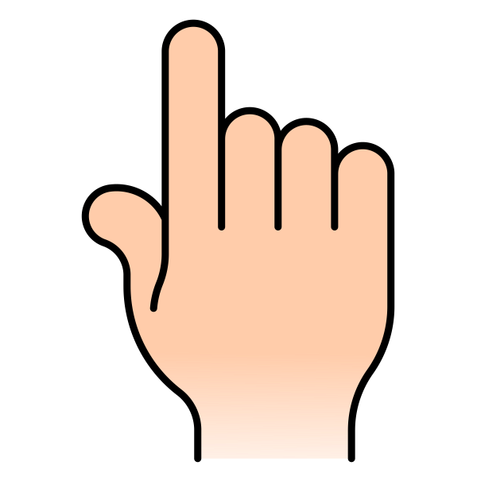

<!DOCTYPE html>
<html>

<head>
  <script src="js/snap.svg-min.js"></script>
  <script src="jspsych-6.3.1/jspsych.js"></script>
  <script src="coact-test-prompt.js"></script>
  <script src="coact-test.js"></script>
  <script src="coact-grid.js"></script>
  <script src="coact-grid-choice.js"></script>
  <script src="coact-grid-choice-audio.js"></script>
  <script src="jspsych-6.3.1/plugins/jspsych-preload.js"></script>
  <script src="jspsych-6.3.1/plugins/jspsych-survey-text.js"></script>
  <script src="jspsych-6.3.1/plugins/jspsych-html-button-response.js"></script>
  <link rel="stylesheet" href="jspsych-6.3.1/css/jspsych.css">
  <link rel="stylesheet" href="coact.css">
  <script
  src="https://code.jquery.com/jquery-2.2.4.min.js"
  integrity="sha256-BbhdlvQf/xTY9gja0Dq3HiwQF8LaCRTXxZKRutelT44="
  crossorigin="anonymous"></script>
</head>
<body></body>
<script> 

$('body,html').addClass('stop-scrolling');

  var timeline = [];

  //general function for grabbing parameter from a URL
  function getParamFromURL( name ) {
    name = name.replace(/[\[]/,"\\[").replace(/[\]]/,"\\]");
    var regexS = "[\?&]"+name+"=([^&#]*)";
    var regex = new RegExp( regexS );
    var results = regex.exec( window.location.href );
    if( results == null )
      return "";
    else
      return results[1];
  }

  // var experiment_prompt = {
  //   type: 'survey-text',
  //   questions: [{prompt: 'Please enter the participant ID:', name: "subject_id"}, {prompt: 'Please enter the condition:', name: "condition"}],
  //   on_finish: function() {
  //     console.log(jsPsych.data.get().last(1).values()[0].response.subject_id)
  //     console.log(jsPsych.data.get().last(1).values()[0].response.condition)
  //     var cur_condition = jsPsych.data.get().last(1).values()[0].response.condition;
  //     if (cur_condition == "pa") {
  //       var condition_vector = ["passive","active","active","passive"];
  //     } else {
  //       var condition_vector = ["active","passive","passive","active"]
  //     }
  //     jsPsych.data.addProperties({
  //   subject_id: jsPsych.data.get().last(1).values()[0].response.subject_id,
  //   condition: cur_condition,
  //   condition_vector: condition_vector
  // });
  //   }
  // }
  
  var subject_id = getParamFromURL("subject_id");
  if (subject_id=="") {
    //timeline.push(experiment_prompt)
    prompt("Enter subject id", "test");
  }

  var condition = getParamFromURL("condition");
  if (condition=="") {
    //timeline.push(experiment_prompt)
    prompt("Enter condition", "ap");
  }

  condition.replace(/[^A-Za-z0-9_]/g, "");
  subject_id.replace(/[^A-Za-z0-9_]/g, "");

  if (condition == "pa") {
        var condition_vector = ["passive","active","active","passive"];
      } else {
        var condition_vector = ["active","passive","passive","active"]
      }

  jsPsych.data.addProperties({
  subject: subject_id,
  condition: condition,
  condition_vector: condition_vector
});

  //organize stimuli
  var familiar_stims = ["duck","cat","cow","butterfly","horse","frog","squirrel","wolf"];
  var experimental_stims_familiar = ["dog","bear","pig","rabbit","tiger","turtle","zebra","elephant"];
  var experimental_stims_somewhat_familiar =["koala","dolphin","flamingo", "raccoon","porcupine","hippopotamus","lobster","jaguar"];
  var experimental_stims_somewhat_unfamiliar = ["sloth","antelope","armadillo","aardvark","chameleon","manatee","alpaca","lynx"];
  var experimental_stims_unfamiliar = ["tapir","wombat","narwhal","cormorant","echidna","nyala","pangolin","tarsier"];

  //put all items together
  var all_items = familiar_stims.concat(experimental_stims_familiar,experimental_stims_somewhat_familiar,experimental_stims_somewhat_unfamiliar,experimental_stims_unfamiliar);
  var all_images = [];
  var image_path = "stims/images/";
  var img_ext = ".png";
  for (i=0; i<all_items.length; i++) {
    all_images.push(image_path+all_items[i]+img_ext)
  }
  console.log(all_images);
  var all_audio= [];
  var audio_array = ["find_","wheres_","its_","thats_"]
  var audio_path = "stims/audio/"
  var audio_ext = ".wav";
  for (i=0; i<all_items.length; i++) {
    for (j=0; j<audio_array.length; j++) {
      all_audio.push(audio_path+audio_array[j]+all_items[i]+audio_ext)
    }
  }
  console.log(all_audio);

//preload
  var preload = {
    type: 'preload',
    auto_preload: true,
    images: all_images,
    audio: all_audio
  }
  timeline.push(preload);

  var robot_button = {
    type: 'html-button-response',
    stimulus: "",
    choices: [""]
  }

  var active_button = {
    type: 'html-button-response',
    stimulus: "",
    choices: [""]
  }

  var test_button = {
    type: 'html-button-response',
    stimulus: "",
    choices: [""]
  }

  //shuffle stims
  //var shuffled_familiar_stims = jsPsych.randomization.shuffle(familiar_stims);
  var shuffled_experimental_stims_familiar = jsPsych.randomization.shuffle(experimental_stims_familiar);
  var shuffled_experimental_stims_somewhat_familiar = jsPsych.randomization.shuffle(experimental_stims_somewhat_familiar);
  var shuffled_experimental_stims_somewhat_unfamiliar = jsPsych.randomization.shuffle(experimental_stims_somewhat_unfamiliar);
  var shuffled_experimental_stims_unfamiliar = jsPsych.randomization.shuffle(experimental_stims_unfamiliar);;

  var num_stims_per_category = 2;
  var num_sets = 4;
  var num_rounds = 2;
  var sample_number = 6;
  var carrier_train_array = ["its_","its_","its_","thats_","thats_","thats_"];
  var first_train_choice_location_array = ["left","left","left","right","right","right"];
  var carrier_test_array = ["wheres_","wheres_","wheres_","wheres_","find_","find_","find_","find_"];
  
  //construct all round blocks
  fam_stims = [];
  for (i=0; i<familiar_stims.length; i++) {
    fam_stims.push({
      "name": familiar_stims[i],
      "item_type": "familiar"
    })
  }
  console.log(fam_stims);


  var round_stims = [];
  for (i=0; i<num_sets; i++) {
    var cur_round_set = [];
    for (j=0; j<num_stims_per_category; j++) {
      cur_index = i * num_stims_per_category + j
      cur_dict_familiar = {
        "name": shuffled_experimental_stims_familiar[cur_index],
        "item_type": "familiar"
      }
      cur_round_set.push(cur_dict_familiar);
      cur_dict_somewhat_familiar = {
        "name": shuffled_experimental_stims_somewhat_familiar[cur_index],
        "item_type": "somewhat familiar"
      }
      cur_round_set.push(cur_dict_somewhat_familiar);
      cur_dict_somewhat_unfamiliar = {
        "name": shuffled_experimental_stims_somewhat_unfamiliar[cur_index],
        "item_type": "somewhat unfamiliar",
      }
      cur_round_set.push(cur_dict_somewhat_unfamiliar);
      cur_dict_unfamiliar = {
        "name": shuffled_experimental_stims_unfamiliar[cur_index],
        "item_type": "unfamiliar"
      }
      cur_round_set.push(cur_dict_unfamiliar);
    }
    var shuffled_cur_round_set = jsPsych.randomization.shuffle(cur_round_set);
    round_stims.push(shuffled_cur_round_set)
  };

  //construct test materials

  // var round_1_test_set = round_stims[0].concat(round_stims[1]);
  // var round_2_test_set = round_stims[2].concat(round_stims[3]);

  // console.log(round_stims);
  // console.log(round_1_test_set);
  // console.log(round_2_test_set);

  // FUNCTIONS FOR BUILDING TRIALS //

  function generate_test(test_set,round_type,set, order, num_test_trials,reps=1) {
    var test_block=[];
    var test_images=[];
    for (k=0; k<test_set.length; k++) {
          test_images.push(image_path+test_set[k]["name"]+img_ext);
        }

    for (i=0; i<reps; i++) {
      if (order == "random") {
        cur_test_set = jsPsych.randomization.shuffle(test_set);
      } else {
        cur_test_set = test_set
      }

      cur_carrier_set = jsPsych.randomization.shuffle(carrier_test_array);
      
      for (j=0; j<num_test_trials; j++) {
        var test_trial =[];

        var cur_target = cur_test_set[j]["name"];
        var cur_target_image = image_path+cur_target+img_ext;
        var cur_target_audio = audio_path+cur_carrier_set[j]+cur_target+audio_ext;
        var cur_target_type = cur_test_set[j]["item_type"];

        var shuffled_images = jsPsych.randomization.shuffle(test_images);

        var test_prompt = {
          type: 'coact-test-prompt',
          images: shuffled_images,
          data: {
            trial_type: "test_prompt",
            cur_target: cur_target,
            cur_target_image: cur_target_image,
            cur_target_type: cur_target_type,
            round_type: round_type,
            set: set
          }
        }

        var test_response = {
          type: 'coact-test',
          images: shuffled_images,
          test_audio: cur_target_audio,
          trial_ends_after_audio: false,
          data: {
            trial_type: "test",
            cur_target: cur_target,
            cur_target_image: cur_target_image,
            cur_target_type: cur_target_type,
            round_type: round_type,
            set: set
          }
        }
        test_trial.push(test_prompt);
        test_trial.push(test_response);
        test_block.push(test_trial);
      }
    }

    return(test_block)
    }

  console.log(timeline)

  function generate_sample(sample_set,condition,set,sample_num) {
    var sample_block = [];
    cur_carrier_set = jsPsych.randomization.shuffle(carrier_train_array);
    cur_first_choice_location_array = jsPsych.randomization.shuffle(first_train_choice_location_array);
    var index_list_1 = [0,1,2,3,4,5,6,7];
    var index_list_2 = [0,1];

    for (j=0; j<sample_num; j++) {
      var cur_sample_images=[];
      var cur_sample_audio=[];
      var cur_sample_names =[];

      // random choices - only used if condition is passive
    var random_choices_1 = jsPsych.randomization.sampleWithoutReplacement(index_list_1,2);
    var random_choices_2 = jsPsych.randomization.sampleWithoutReplacement(index_list_2,1);
    console.log(random_choices_1);
    console.log(random_choices_2);


      var shuffled_sample_set = jsPsych.randomization.shuffle(sample_set);
      for (k=0; k<shuffled_sample_set.length; k++) {
          cur_sample_images.push(image_path+shuffled_sample_set[k]["name"]+img_ext);
          cur_sample_names.push(shuffled_sample_set[k]["name"])
          cur_sample_audio.push(audio_path+cur_carrier_set[j]+shuffled_sample_set[k]["name"]+audio_ext)
          }

        // create trial
        var trial = {
          type: 'coact-grid',
          images: cur_sample_images,
          image_stimuli_names: cur_sample_names,
          image_audio_names: cur_sample_audio,
          first_choice_location: cur_first_choice_location_array[j],
          condition: condition,
          random_choices: random_choices_1,
          data: {
            trial_type: "sampling",
            condition: condition,
            sample_num: j,
            set: set
          }
        };

        var trial_2 = {
         type: 'coact-grid-choice',
         images: cur_sample_images,
         central_images: function() {
          console.log(jsPsych.data.get().last(1).values()[0].chosen_images);
          return jsPsych.data.get().last(1).values()[0].chosen_images
        },
        central_audio: function() {
          console.log(jsPsych.data.get().last(1).values()[0].chosen_audio_in_order);
          return jsPsych.data.get().last(1).values()[0].chosen_audio_in_order
        },
          first_choice_location: cur_first_choice_location_array[j],
          condition: condition,
          random_choice: random_choices_2,
          data: {
            trial_type: "sampling",
            condition: condition,
            sample_num: j,
            set: set,
            chosen_images_in_order: function() { return jsPsych.data.get().last(1).values()[0].chosen_images_in_order},
            chosen_audio_in_order: function() { return jsPsych.data.get().last(1).values()[0].chosen_audio_in_order},
            chosen_items_in_order: function() { return jsPsych.data.get().last(1).values()[0].chosen_items_in_order},
          }
      };

      var trial_3 = {
        type: 'coact-grid-choice-audio',
        images: cur_sample_images,
        central_images: function() {
          console.log(jsPsych.data.get().last(1).values()[0]);
          return jsPsych.data.get().last(1).values()[0].central_images
        },
        chosen_image: function() {
          console.log(jsPsych.data.get().last(1).values()[0].chosen_image)
          return jsPsych.data.get().last(1).values()[0].chosen_image
        },
        chosen_audio: function() {
          console.log(jsPsych.data.get().last(1).values()[0].chosen_audio)
          return jsPsych.data.get().last(1).values()[0].chosen_audio
        },
        chosen_index: function() {
          console.log(jsPsych.data.get().last(1).values()[0].chosen_index)
          return jsPsych.data.get().last(1).values()[0].chosen_index
        },
          first_choice_location: cur_first_choice_location_array[j],
          trial_ends_after_audio: false,
          data: {
            trial_type: "sampling",
            condition: condition,
            sample_num: j,
            set: set
          }
      };

      sample_block.push(trial);
      sample_block.push(trial_2);
      sample_block.push(trial_3);
    }

    return(sample_block)
  }

  // ROUND 1 - PRETEST//

  //build test blocks and combine into test round, then shuffle
  var fam_block = generate_test(fam_stims,"practice_pretest","familiar","fixed",2,reps=1);
  console.log(fam_block);
  var test_prompt = [test_button];
  var fam_block_flat = test_prompt.concat(fam_block.flat());
  var test_block_1 = generate_test(round_stims[0],"pretest",1,"random",round_stims[0].length,reps=1);
  var test_block_2 = generate_test(round_stims[1],"pretest",2,"random",round_stims[1].length,reps=1);
  var test_round = test_block_1.concat(test_block_2);
  var test_round_shuffled = jsPsych.randomization.shuffle(test_round);
  var complete_pretest_round_1 = fam_block_flat.concat(test_round_shuffled.flat());
  console.log(complete_pretest_round_1)
  //add to timeline
  timeline = timeline.concat(complete_pretest_round_1);

  // ROUND 1 - SAMPLE//

  //build sample blocks
  if (condition_vector[0]=="active") {
    var sample_prompt_1 = [active_button];
  } else {
    var sample_prompt_1 = [robot_button];
  }
  var practice_sample_1 = generate_sample(fam_stims,condition_vector[0],"familiar",2);
  var sample_block_1 = generate_sample(round_stims[0],condition_vector[0],1,sample_number);
  console.log(sample_block_1)

  if (condition_vector[1]=="active") {
    var sample_prompt_2 = [active_button];
  } else {
    var sample_prompt_2 = [robot_button];
  }
  var practice_sample_2 = generate_sample(fam_stims,condition_vector[1],"familiar",2);
  var sample_block_2 = generate_sample(round_stims[1],condition_vector[1],2,sample_number);

  console.log(sample_block_2)

  timeline = timeline.concat(sample_prompt_1,practice_sample_1,sample_block_1,sample_prompt_2,practice_sample_2,sample_block_2);

  // ROUND 1 - POST TEST//
  //build test blocks and combine into test round, then shuffle
  var fam_block = generate_test(fam_stims,"practice_posttest","familiar","random",1,reps=1);
  console.log(fam_block);
  var test_prompt = [test_button];
  var fam_block_flat = test_prompt.concat(fam_block.flat());
  var test_block_1 = generate_test(round_stims[0],"posttest",1,"random",round_stims[0].length,reps=1);
  var test_block_2 = generate_test(round_stims[1],"posttest",2,"random",round_stims[1].length,reps=1);
  var test_round = test_block_1.concat(test_block_2);
  var test_round_shuffled = jsPsych.randomization.shuffle(test_round);
  var complete_posttest_round_1 = fam_block_flat.concat(test_round_shuffled.flat());
  console.log(complete_posttest_round_1)
  //add to timeline
  timeline = timeline.concat(complete_posttest_round_1);

  // ROUND 2 - PRETEST//

  //build test blocks and combine into test round, then shuffle
  var fam_block = generate_test(fam_stims,"practice_pretest","familiar","random",1,reps=1);
  console.log(fam_block);
  var test_prompt = [test_button];
  var fam_block_flat = test_prompt.concat(fam_block.flat());
  var test_block_3 = generate_test(round_stims[2],"pretest",3,"random",round_stims[2].length,reps=1);
  var test_block_4 = generate_test(round_stims[3],"pretest",4,"random",round_stims[3].length,reps=1);
  var test_round = test_block_3.concat(test_block_4);
  var test_round_shuffled = jsPsych.randomization.shuffle(test_round);
  var complete_pretest_round_2 = fam_block_flat.concat(test_round_shuffled.flat());
  console.log(complete_pretest_round_2)
  //add to timeline
  timeline = timeline.concat(complete_pretest_round_2);

  // ROUND 1 - SAMPLE//

  //build sample blocks
  if (condition_vector[2]=="active") {
    var sample_prompt_3 = [active_button];
  } else {
    var sample_prompt_3 = [robot_button];
  }
  //var practice_sample_3 = generate_sample(fam_stims,condition_vector[2],"familiar",2);
  var sample_block_3 = generate_sample(round_stims[2],condition_vector[2],3,sample_number);
  console.log(sample_block_3)

  if (condition_vector[3]=="active") {
    var sample_prompt_4 = [active_button];
  } else {
    var sample_prompt_4 = [robot_button];
  }
  //var practice_sample_4 = generate_sample(fam_stims,condition_vector[3],"familiar",2);
  var sample_block_4 = generate_sample(round_stims[3],condition_vector[3],4,sample_number);

  console.log(sample_block_4)

  timeline = timeline.concat(sample_prompt_3,sample_block_3,sample_prompt_4,sample_block_4);

  // ROUND 1 - POST TEST//
  //build test blocks and combine into test round, then shuffle
  var fam_block = generate_test(fam_stims,"practice_posttest","familiar","random",1,reps=1);
  console.log(fam_block);
  var test_prompt = [test_button];
  var fam_block_flat = test_prompt.concat(fam_block.flat());
  var test_block_3 = generate_test(round_stims[2],"posttest",3,"random",round_stims[2].length,reps=1);
  var test_block_4 = generate_test(round_stims[3],"posttest",4,"random",round_stims[3].length,reps=1);
  var test_round = test_block_3.concat(test_block_4);
  var test_round_shuffled = jsPsych.randomization.shuffle(test_round);
  var complete_posttest_round_2 = fam_block_flat.concat(test_round_shuffled.flat());
  console.log(complete_posttest_round_2)
  //add to timeline
  timeline = timeline.concat(complete_posttest_round_2);


  jsPsych.init({
    timeline: timeline,
    on_finish: function() {
      jsPsych.data.displayData();
    }
  });
</script>

</html>
